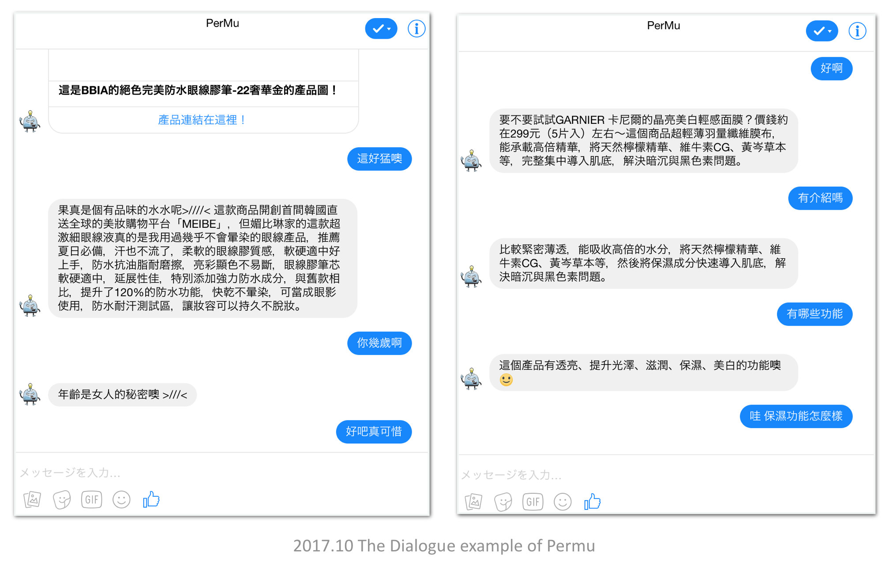

Natural Language Processing Research
Chatbot Research, which is an application of Natural Language Processing, mainly consists of three parts: Language Understanding (LU), Dialog Management (DM), and Natural Language Generation (NLG).
In my recent research, I use retrieval-based NLG connected with the cosmeic product database to make cosmetic recommedation system chatbot - Permu. Then I applied Reinforcement Learning Method on Dialog Management to improve the user evaluation and built a new conversational recommendation system - YourRS.
Connected with psychology, I also built a emotional listening chatbot - listenBot. This project combines both computer science and psychology, based on some psychological theories, making a chatbot let users speak their feelings and stories to the bot, and bot will reply in some emotional gifs, text or songs to users. Though it's is a simple work, we spent a lot of time on designing a fluent dialogflow.
Cosmetic product database from pixnet.net with 5946 products
Name Entity Linking, RNN LU, Retrieval-based NLG, and a rule-based DM.
1st prize in task-oriented chatbot compete of 2017 Pixnet Hackathon.
This paper describes a general model architecture Your-RS (URR Recommendation System) applying Reinforcement Learning (RL) on creating dialogue strategy which can be implemented in any domain dataset for conversational recommendation system (CRS). RL is a promising approach to create dialogue strategy and policy optimizations. In our experiments, we design a hypothetical dataset, collecting real dialogue dataset from Amazon Mechanical Turk, and test our model by human. The method is tested and shown to create a dialogue strategy which performs significantly better, and also can be generated using a small dataset.
Unpublished.
We propose Chinese Listening Chatbot. It’s a chatbot people can talk to. We want to help people solve their emotional problems. Dialogue sequence is based on Full Catastrophe Living and SFBT(Solution-focused therapy). Make users can focus on their body, mood and thinking process. We also include pics and songs in replying contents. Hopefully, we can find some relations between these contents and users response, applying these data to future emotional analysis.
Psychological: Catastrophe Living and SFBT(Solution-focused therapy)
Computer Science: Back-end develop